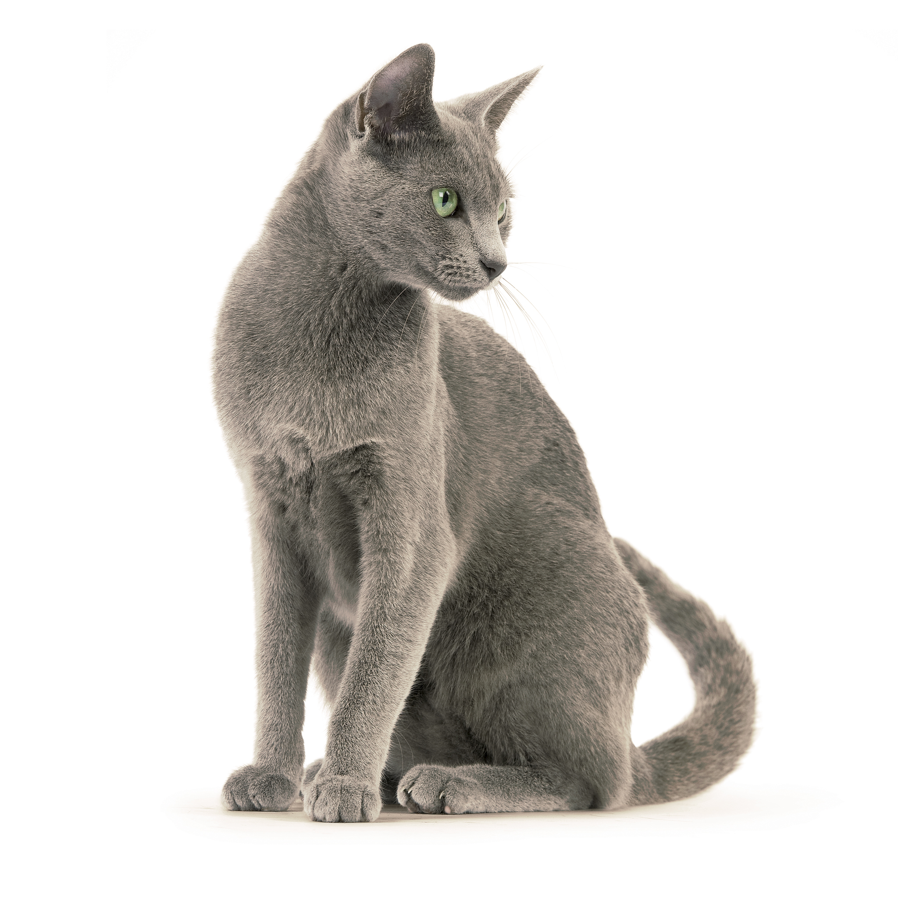

Русская голубая
Характеристика
| Образ жизни | В помещении |
| Тип шерсти | Короткошерстная |
| Размер | Средний |
| Образ жизни | В помещении |
| Тип шерсти | Короткошерстная |
| Размер | Средний |
Русская голубая – кошка от среднего до крупного размера, с длинным грациозным телом и довольно высокими конечностями. Голова клиновидной формы, череп в профиль длинный и плоский, с небольшой выпуклостью чуть выше глаз. Уши большие, высоко поставленные. Глаза кошки русской голубой по стандарту ярко-зеленые, миндалевидной формы. Шерсть очень короткая, плюшевой текстуры, прилегает к телу неплотно. Длинный хвост сужается к кончику от широкого основания.
Русская голубая кошка по характеру ласкова, сообразительна и общительна, дружелюбна и игрива. Она легко адаптируется к любой обстановке и спокойно принимает других домашних животных. Русская голубая кошка стремится оставаться рядом с хозяином, но не проявляет навязчивости. К гостям она относится очень сдержанно. Особых потребностей у кошек этой породы нет, и уход за ними не доставит много проблем. Характер русской голубой делает ее идеальным домашним животным для современной семьи. Она достаточно независима, чтобы занять себя в отсутствие хозяев. В то же время достаточно дружелюбна, чтобы играть с человеком и сидеть на руках, когда у владельца найдется время.
Считается, что русская голубая кошка – это естественная порода, завезенная в Европу в 60-е годы XIX века, тогда и начинается ее история. Впервые за пределами России они были письменно упомянуты в 1875 году. Тогда русскую кошку продемонстрировали на выставке в Хрустальном дворце в Лондоне под названием «архангельская» (то есть привезенная из Архангельска). В прошлом их также называли «испанскими». В первое время русские кошки были только голубого окраса и с красивой и очень густой «плюшевой» шерстью. По-видимому, она была необходима им для защиты от холодов. В Австралии, Новой Зеландии, Южной Африке и Англии были сформированы черная и белая разновидности русской кошки с теми же исходными характеристиками. Но в большинстве фелинологических организаций до сих пор признан только первоначальный голубой окрас.